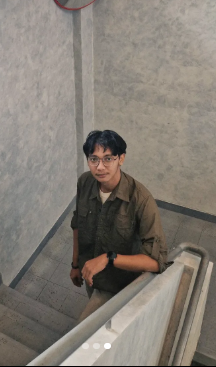

I am a Geodesy graduate and certified GIS Analyst specializing in GIS & Spatial Analysis, Remote Sensing, and Photogrammetry. With a strong foundation in geospatial data and surveying, I turn spatial data into accurate, meaningful, and well- structured information for mapping, analysis, and spatial decision-making.
My work focuses on applying geospatial methods to real-world challenges, including spatial analysis, environmental mapping, remote sensing, and photogrammetric applications. I approach each project with a focus on accuracy, data quality, and clear visualization to deliver reliable and purposeful geospatial outputs.
ArcGIS Pro · QGIS · Spatial Analysis
Google Earth Engine · Landsat · Sentinel
UAV Photogrammetry · RTK · Agisoft Metashape